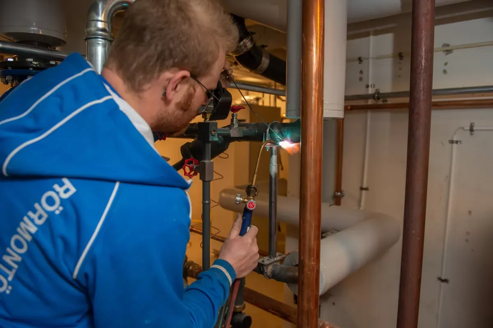
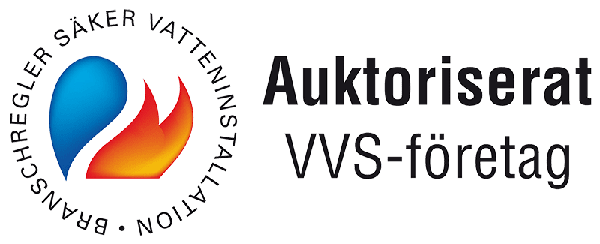
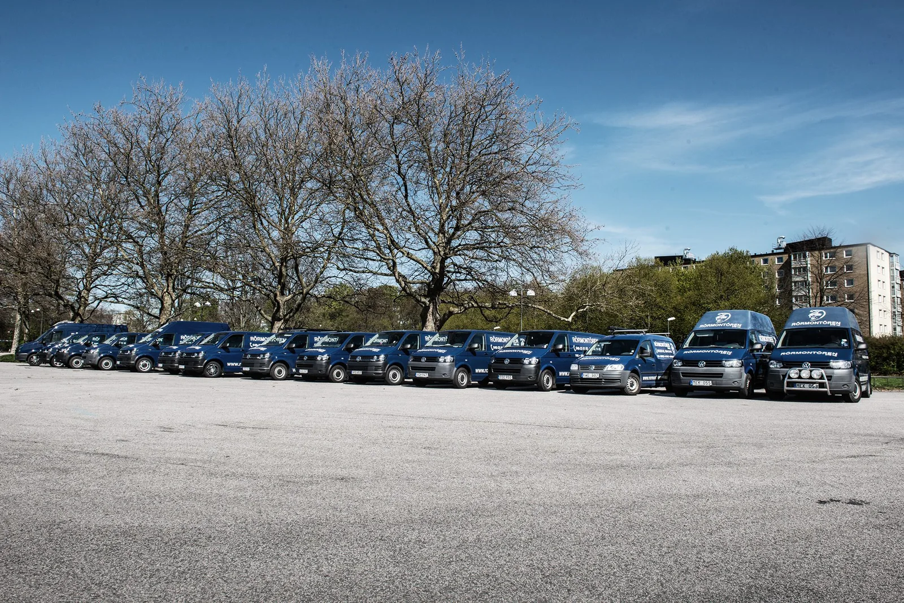

Vatten. Värme.
Vi löser det.
Från en droppande kran till en hel fastighet.
Din lokala VVS-partner i Skåne – med jour dygnet runt.
Riktiga människor.På plats i Skåne sedan 2003

Auktoriserade för
vatten- och gasinstallation
Medlem i
Installatörsföretagen
Mer än 25 års
branscherfarenhet
Rätt hjälp.
Hela vägen.
Vi tar hand om det som ska fungera varje dag. För dig som privatperson, fastighetsägare, företag eller bostadsrättsförening.

När det händer.
Finns vi här.

Nära till hands.
Noga med jobbet.
Bakom Rörmontören Syd finns ett lag av montörer och projektledare med mer än 25 års erfarenhet av VVS.
Vi utgår från Staffanstorp och hjälper kunder i hela Skåne. Från det lilla servicejobbet till den stora entreprenaden – med omtanke om både människor och installationer.
Lär känna Rörmontören Syd
Det sitter
i detaljerna.
Rätt kunskap. Ordentligt utfört.
VVS som fungerar i vardagen.
Förtroende
förtjänar man.
5,0/55 omdömen på Hitta.se”Ett fantastiskt bra arbete och trevlig montörer! Rekommenderar verkligen!”
Vad kan vi
hjälpa dig med?
Ett mindre jobb hemma eller ett större projekt? Berätta vad du behöver, så tar vi det därifrån.
Alla kontaktuppgifter